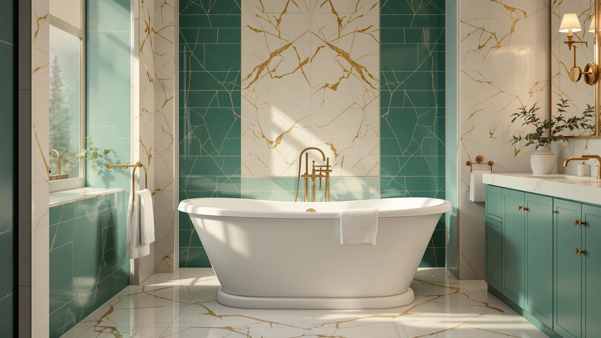

Vintage Tub & Bath Axton Acrylic Double Ended Review (2026): Worth It?
Prices and picks verified as of November 2026. Independent, reader-supported reviews.


Quick Answer
This Vintage Tub & Bath Axton acrylic double ended review found its main advantage is the symmetrical double-slope shell, which lets you use either end as a backrest, plus a bundled faucet that none of the three competitors below include. At $1,189.78 it costs more than either FerdY Sentosa 67" tub at $1,099.99 but less than the WOODBRIDGE 59" stone resin tub at $1,449.00. If a double ended layout and an included faucet matter more to you than saving money or gaining eight inches of length, the Axton earns its price.
Our pick: Vintage Tub & Bath Axton, $1,189.78 Check Price on Amazon
Bottom line: our top pick is the Vintage Tub & Bath Axton 59 Inch Acrylic Double Ended at $1,189.78.
Things to Know Before You Buy
- This review focuses on the Axton's double ended shell and bundled faucet, the two features Vintage Tub & Bath builds its listing around.
- At $1,189.78, the Axton costs $89.79 more than either FerdY Sentosa 67" tub but $259.22 less than the WOODBRIDGE 59" stone resin tub compared here.
- Vintage Tub & Bath's listing doesn't publish interior capacity or soaking depth, so buyers comparing spec sheets will find less detail here than on the WOODBRIDGE or FerdY listings.
- Unlike the three alternatives in this review, the Axton ships as a package with a faucet included, so you're not pricing that hardware separately.
- Freestanding tubs expose their plumbing connections, so confirm your bathroom's rough-in matches before ordering any of the four tubs compared here.
This Vintage Tub & Bath Axton Acrylic Double Ended Review looks at whether a symmetrical shell and an included faucet justify a $1,189.78 price against three rival freestanding tubs. At 59 inches long and finished in white acrylic, the Axton is built with a double ended design, meaning both end walls slope the same way instead of the single raised backrest you get on a standard freestanding tub.
We priced the Axton against the WOODBRIDGE 59" stone resin tub and the FerdY Sentosa 67" in both brushed nickel and matte black drain finishes, all covered in this review. At $1,189.78, it sits in the middle of the group: $89.79 more than either FerdY Sentosa tub but $259.22 less than the WOODBRIDGE. The question this review answers is whether the double ended layout and the bundled faucet are worth that middle-of-the-road price, or whether a cheaper or more detailed alternative serves most bathrooms better.
Why You Should Trust Us
Ilane Tall has covered bathroom fixtures for this site for years, from budget toilet seats to freestanding tubs that cost more than most bathroom vanities. For this Vintage Tub & Bath Axton Acrylic Double Ended Review, we checked the manufacturer's published listing details, compared current Amazon pricing across four freestanding tubs, and weighed each one against the plumbing and floor space it demands.
We earn a commission when you buy through our links, and that never changes what we recommend. When a tub has a real limitation, like the Axton's missing capacity and depth specs next to the WOODBRIDGE's detailed listing, we say so directly instead of glossing over it.
Our Research Experience
For this Vintage Tub & Bath Axton Acrylic Double Ended Review we focused on the two things that decide whether a soaking tub earns its price: what the double ended design actually offers over a standard single-backrest tub, and what it costs relative to similarly priced rivals. The Axton's defining feature is its symmetrical shell, built into a 59-inch white acrylic tub, and that symmetry is the main design difference between this tub and the sloped lumbar support built into the FerdY Sentosa 67" models we compare it against.
Specification depth was the other variable we weighed closely. Vintage Tub & Bath's listing does not publish water capacity, soaking depth, or a weight rating, gaps that stood out once we lined it up against the WOODBRIDGE 59", whose listing spells out a 73-gallon capacity and heat-retention claims. A buyer who wants to compare tubs strictly on paper will find less to go on here than with the WOODBRIDGE.
We priced out the full setup the way any buyer would have to. Unlike every other tub in this review, the Axton ships as a package that includes a faucet, so that's one line item you don't have to source and install separately, even though the base tub price lands in the middle of this group.
Fit and finish mattered as much in our assessment. The white acrylic finish is the only color Vintage Tub & Bath lists for this model, and because the double ended shell puts a sloped wall at both ends instead of one flat wall, measure your bathroom's door height and clearance before you commit, especially in a tight space.
Overview & Specs

Vintage Tub & Bath Axton
What we like
- Symmetrical double-slope shell lets you use either end as a backrest instead of being locked into one orientation
- Ships as a package with a faucet included, unlike the WOODBRIDGE and FerdY tubs in this review
- 59-inch white acrylic shell should resist household chemicals and cosmetic products the way most acrylic tubs do
Flaws but not dealbreakers
- At $1,189.78, it costs $89.79 more than either FerdY Sentosa 67" tub compared in this review
- Vintage Tub & Bath does not publish water capacity, soaking depth, or weight for this model
- At 59 inches, it's eight inches shorter than the FerdY Sentosa 67" alternatives, so bathers who want to stretch out get less room
| Material | Acrylic |
| Size | 59" (White) |
This Vintage Tub & Bath Axton Acrylic Double Ended Review found the tub builds its case on shape and bundled hardware rather than raw specs. Its double ended design puts a sloped wall at each end of the basin instead of the single raised backrest on a standard freestanding tub, and the 59-inch acrylic shell comes finished in a single white colorway. Vintage Tub & Bath's listing doesn't spell out water capacity, soaking depth, or exact material composition, which makes this tub harder to compare on paper against the more detailed WOODBRIDGE 59" listing further down this review.
At $1,189.78, the Axton costs less than the WOODBRIDGE 59" at $1,449.00, but more than the FerdY Sentosa 67" tubs at $1,099.99 each. Unlike every other tub in this review, the price includes a faucet, so the premium over the FerdY tubs buys you both the symmetrical layout and hardware you'd otherwise have to source separately.
What We Liked
This Vintage Tub & Bath Axton Acrylic Double Ended Review found the bundled faucet to be the standout value. Vintage Tub & Bath is the only brand among the four tubs compared here that packages a faucet with the tub, which saves you a separate purchase and a separate installation step most freestanding tub buyers have to plan for.
The symmetrical shell also stood out. Because both ends slope the same way, you can pick which end is the backrest instead of being locked into the single-sided layout the FerdY Sentosa tubs use.
The white acrylic finish rounds out the appeal. A single, clean colorway means the tub should match most bathroom fixtures without forcing a redesign around a specific hardware finish.
What Could Be Better
This Vintage Tub & Bath Axton Acrylic Double Ended Review found missing specifications to be the tub's clearest limitation. Vintage Tub & Bath does not publish water capacity, soaking depth, or a weight rating, so you're buying this tub with less information than the WOODBRIDGE 59" listing gives you for a similar price.
Length is the other tradeoff. At 59 inches, the Axton is eight inches shorter than both FerdY Sentosa 67" tubs in this review, so a taller bather loses room to stretch out.
Price sits in the middle rather than at either extreme. At $1,189.78, the Axton costs $89.79 more than each FerdY Sentosa tub, so if the bundled faucet isn't something you need, that premium buys you less length for more money.
Who Is It For?
This Vintage Tub & Bath Axton Acrylic Double Ended Review recommends buying it if you want a double ended soaking profile and would rather not source a faucet separately. It suits a bather who wants the flexibility to pick which end is the backrest over maximizing interior length.
It also makes sense for a renovation budget that's already treating faucet hardware as a separate line item, since folding that cost into the tub price can simplify planning. Skip it if you want full published specs before you buy, since Vintage Tub & Bath discloses less capacity and depth detail than the WOODBRIDGE alternative.
Buyers who want more length for less money should look at either FerdY Sentosa 67" tub instead. Both cost $89.79 less than the Axton while offering eight additional inches, though you'll need to budget for a faucet separately.
Alternatives to Consider
If the Axton's $1,189.78 price or its shorter 59-inch length rules it out, the other three tubs in this Vintage Tub & Bath Axton Acrylic Double Ended Review give you a different tradeoff. Each one swaps the Axton's double ended layout and bundled faucet for extra length, a different material, or a specific drain finish.

Premium Choice
WOODBRIDGE 59" Stone Resin Freestanding
The WOODBRIDGE 59" matches the Axton's 59-inch footprint but swaps acrylic for a stone resin shell rated for a 73-gallon capacity and built with thick walls meant to retain heat longer during a soak. It costs $259.22 more than the Axton and doesn't include a faucet, but its solid surface can be sanded to remove minor scratches, a repair option the Axton's acrylic shell doesn't offer. If a stone resin build and a larger published capacity matter more than a bundled faucet, the WOODBRIDGE is the stronger buy.
$1,449.00
Check Price on Amazon
Best Value
FerdY Sentosa 67" Acrylic Freestanding
The FerdY Sentosa 67" with a brushed nickel drain is eight inches longer than the Axton and costs $89.79 less, with a published 16-inch soaking depth and lumbar support built into both ends. It doesn't include a faucet, so budget for that separately, and it skips the Axton's double ended symmetry for a single-sided sloped backrest. If extra length and a lower price matter more than a bundled faucet, this FerdY tub is the pick.
$1,099.99
Check Price on Amazon
Best Value
FerdY Sentosa 67" Acrylic Freestanding
This FerdY Sentosa 67" is the same tub as the brushed nickel version above, built from fiberglass-reinforced acrylic and cUPC certified, but finished with a matte black drain instead. It costs the same $1,099.99, so the choice between the two comes down to which drain finish matches your fixtures, not performance. Like its brushed nickel twin, it's eight inches longer than the Axton and doesn't include a faucet.
$1,099.99
Check Price on AmazonWhat does double ended mean on the Vintage Tub & Bath Axton?
A double ended tub like the Axton has a symmetrical acrylic shell with the drain centered and both end walls sloped the same way, so either end works as a backrest.
Does the Vintage Tub & Bath Axton include a drain or faucet?
Vintage Tub & Bath packages this listing as a tub-and-faucet bundle, the only one of the four tubs in this review sold with a faucet included, though the listing doesn't specify whether a drain or overflow kit ships with the package, so…
Frequently Asked Questions
What does double ended mean on the Vintage Tub & Bath Axton?
A double ended tub like the Axton has a symmetrical acrylic shell with the drain centered and both end walls sloped the same way, so either end works as a backrest. That differs from the single-sloped profile on the WOODBRIDGE 59" and the two FerdY Sentosa tubs compared in this review.
Does the Vintage Tub & Bath Axton include a drain or faucet?
Vintage Tub & Bath packages this listing as a tub-and-faucet bundle, the only one of the four tubs in this review sold with a faucet included, though the listing doesn't specify whether a drain or overflow kit ships with the package, so confirm that detail with the seller before you order.
Is the Vintage Tub & Bath Axton worth it over the WOODBRIDGE or FerdY alternatives?
It depends on what matters most to you. This Vintage Tub & Bath Axton Acrylic Double Ended Review found the Axton's advantage is its bundled faucet and symmetrical layout, while the WOODBRIDGE offers a larger stone resin build and the FerdY Sentosa tubs offer more length for less money. If a double ended layout and an included faucet outweigh saving $89.79 or gaining eight inches, the Axton is the stronger buy.
Final Verdict
This Vintage Tub & Bath Axton Acrylic Double Ended Review comes down to convenience versus capacity. The Axton wins on flexibility with its symmetrical shell and bundled faucet, a combination none of the three alternatives offer, even though it's shorter than the FerdY Sentosa tubs and less detailed on paper than the WOODBRIDGE. If a double ended layout and an included faucet matter more to you than extra length or a full spec sheet, the Vintage Tub & Bath Axton is the tub to buy. Choose the WOODBRIDGE 59" if you want a stone resin build with a larger published capacity, or either FerdY Sentosa 67" if length and price matter more than bundled hardware.
Related Guides
If this Vintage Tub & Bath Axton Acrylic Double Ended Review didn't settle your search, these guides cover more freestanding tub options and buying advice.